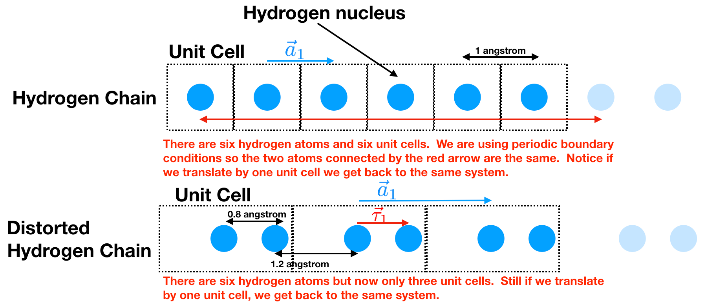
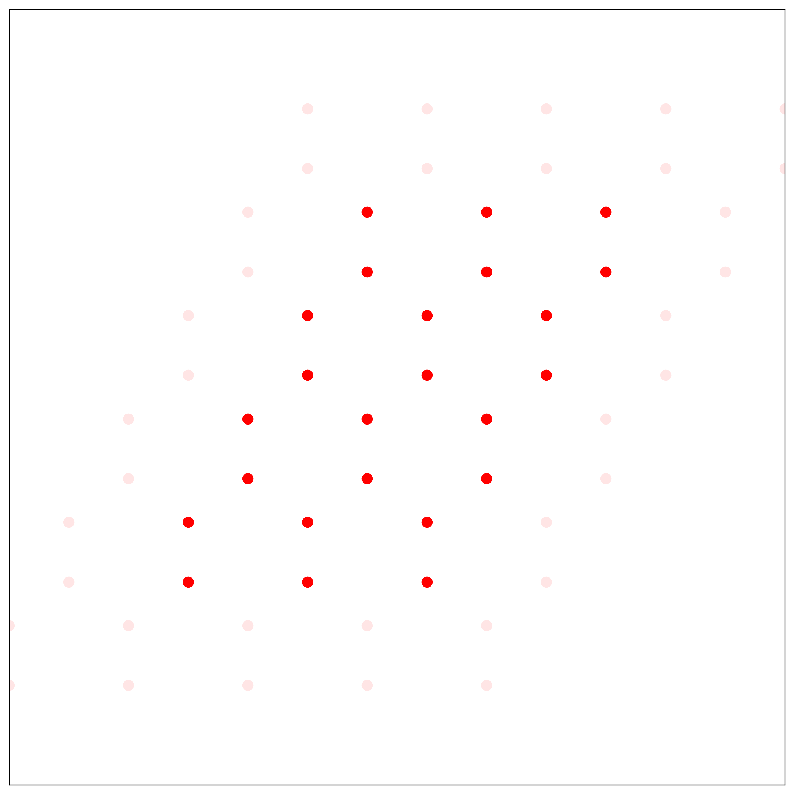
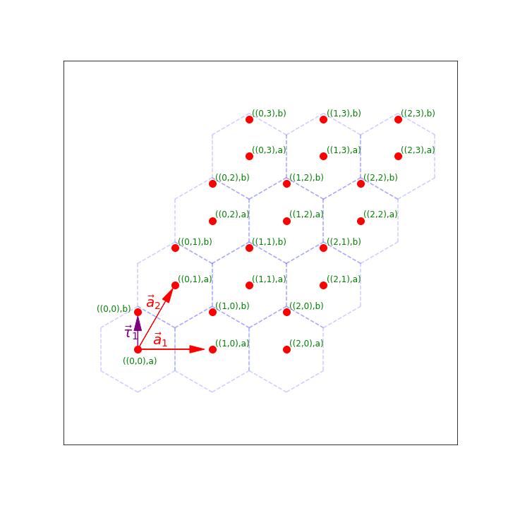
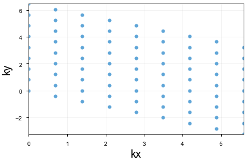
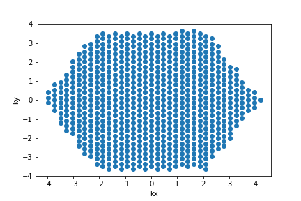

Lattices
Contents
Lattices#
Our goal in this section is to start understanding solids. Solids consist of atoms arranged in a periodic way. So to understand solids we need to start by understanding periodic arangements.
We will start with one-dimensional solids and then move to two-dimension.
Let us start by consider two different chains of Hydrogen atoms:
Hydrogen Chain: all the hydrogen atoms are the same distance apart.
Distorted Hydrogen Chain: the hydrogen atoms have distorted themselves so they are in pairs. This is called a Pierls Distortion and is a common thing for a 1d chain of atoms to do.

Now there are a couple things to notice:
In a real solid, we should think of it essentially being infinitely long. Our computers don’t like to hold an infinite amount of information. To best emulate this what we do is use periodic boundary conditions. Assume we want to only hold six atoms. Then we say that atom 6 is actually adjacent to atom 1.
We see that there is a chunk of the material that can be translated by \(\vec{a_1}\) and you get back the same system. We call that chunk of material the unit cell and \(\vec{a_1}\) the lattice vector. In the Hydrogen chain we see that the unit cell contains one Hydrogen atom and that \(\vec{a}_1=1\) unit in the \(x\) direction. In the distorted Hydrogen chain we see that the unit cell contains two Hydrogen atoms and that \(\vec{a}_1=2\) units in the \(x\) direction.
The center of all our unit cells are at \(m \vec{a}_1\) where \(m\) is an integer between 0 and \(N\) (the number of unit cells). This defines our real-space lattice.
We can specify the location of the atoms within the unit cell by saying how far it is displaced from the center of the unit cell. For example, for the distorted Hydrogen lattice, this is \(\\{ \vec{\tau}_0 = 0.0; \vec{\tau}_1 =0.8 \\}\) units in the \(x\) direction. This set is called the basis.
Labeling our lattice sites: Now, we might want to label our hydrogen atoms. We could label them by their position (i.e. the Hydrogen atom at spot 2.8) but that turns out to be less convenient then labeling them by (unit cell, atom number). Then we can talk about the Hydrogen atom labelled (3,b) which is the “b” Hydrogen atom in the 3rd unit cell.
For both the Hydrogen and distorted Hydrogen lattice, write a function
def Labels(N)
which takes the number of unit cells and returns a list of site labels. (i.e. myLabels = Labels(3) should return the list [(1,a),(1,b),(2,a),(2,b),(3,a),(3,b)] for the distorted Hydrogen lattice)
Now, each lattice site has three things: a label, a location, and an index (i.e. which spot on the list it’s in). It will be useful to have functions which convert between these. Write python functions (for both lattices):
LabelToR(myLabel)Let the (1,1) atom be at location 0. For the distorted Hydrogen chain, LabelToR( (2,b)) should return 2.8LabelToIndex(myLabel)
Momentum Space#
We have a real space lattice of unit cells each of which contain some number of types of atoms. We can also have a momentum space lattice (called the reciprocal lattice) again each of which contains some number of types of atoms (so 2 in the distorted Hydrogen lattice)
The reciprocal lattice is defined (in 1d) as \(m\vec{b}_i\) where \(0\leq m < N\) is an integer where \(N\) is the number of unit cells and \(\vec{b}_1=2\pi/(N|\vec{a}_1|)\) (the key property that \(\vec{b}\) must obey is that \(\vec{b}_1 \cdot N\vec{a}_1 = 2\pi\)). We will have a list of labels that consist of \((m, \textrm{ atom type})\).
Write
momentumLabels(N)which takes the number of unit cells \(N\) and generates labels for the reciprocal lattice vectors.Write
momentumLabelToK(myLabel)which takes a momentum label \((m,\textrm{ atom type})\) and tells you the location in the reciprocal lattice which corresponds to that label. Notice that these are the same for the Hydrogen chain and distorted Hydrogen chain.
Testing
There are a couple of things to test.
Loop over your labels and use
LabelToRto plot out all your points (you should also do this for your k-points)Check
LabelToIndexby checking for an arbitrarylabelthatmyLabels[LabelToIndex(label)]==label
Graphene#
Now we are going to move to two-dimensions and work with graphene. Graphene is a bunch of Carbon atoms sitting on a honeycomb lattice.

Our first goal will to be again to figure out what chunk of material we can outline so that we can translate it by a certain amount and get back the same material. Because we are in two dimensions, actually there are two different directions that we can translate our points and get back the same configuration. 
Therefore, we have two lattice vectors \(\vec{a}_1=(1,0)\) and \(\vec{a}_2=(1/2,\sqrt{3}/2)\) so that if we translate by either \(\vec{a}_1\) or \(\vec{a}_2\) (or actually any \(m\vec{a}_1 + n\vec{a}_2\) with integers \(m\) and \(n\)) we get back the same material. The vector \(\vec{\tau}_1=(0,1/\sqrt{3})\) connects an “a” site to a “b” site in the same unit cell.
Notice that in this picture, we have a number of unit cells \(N_1=3\) and \(N_2=4\) in the \(\vec{a}_1\) and \(\vec{a}_2\) directions.
Our real-space lattice can be created by taking all points of the form \(m\vec{a}_1 + n\vec{a}_2\) for \(0 \leq m < N_1\) and \(0 \leq n < N_2\).
Labeling our lattice sites: Again, we’d like to label our lattice sites. It will still be convenient to label them by the unit cell and then the atom within that unit cell. Now, to label the unit cell it’s easiest to use two numbers \((p,q)\) which tells us that the unit cell we are talking about is \(p\) unit cells in the \(\vec{a}_1\) direction and \(q\) unit cells in the \(\vec{a}_2\) direction. We can then use an additional number to say which atom within the unit cell it is.
write a function
def Labels(N1,N2)
which takes the number of unit cells \(N_1\) and \(N_2\) in the two directions (so \(N_1N_2\) cells total) and returns a list of site labels.
Then again write functions
LabelToR(myLabel)Let the ((1,1),a) atom be at location 0. To check this you should just plot all the points generated by[LabelToR(i) for i in myList]LabelToIndex(myLabel)Make sure you check this too.
Momentum Space#
The reciprocal lattice for graphene will also be two-dimensional. We need to define \(\vec{b_1}, \vec{b_2}\) which have the property that \(\vec{a_i} \cdot \vec{b_j} =\delta_{ij} 2\pi/N_i\) This will give us \(\vec{b}_1=(1,-\frac{1}{\sqrt{3}}) \frac{2\pi}{N_1}\) and \(\vec{b}_2=(0,\frac{2}{\sqrt{3}})\frac{2\pi}{N_2}\). Then we can define our reciprocal lattice as all points \(m\vec{b}_1 + n\vec{b_2}\) where \(0 \leq m < N_1\) and \(0 \leq n < N_2\) are integers. Like the real space lattice, we will label the momentum lattice sites by the tuple \(((m,n), \textrm{ atom type })\)
Write
momentumLabels(N)which takes the number of unit cells \(N\) and generates labels for the reciprocal lattice vectors.Write
momentumLabelToK(myLabel)which takes a momentum label and tells you the location in the reciprocal lattice which corresponds to that label. 
This is what my Brillouin zone looks like for 9x9.
Testing
There are a couple of things to test.
Loop over your labels and use
LabelToRto plot out all your points (you should also do this for your k-points)Check
LabelToIndexby checking for an arbitrarylabelthatmyLabels[LabelToIndex(label)]==label
Tangeant: First Brillouin Zone
Like the real space lattice, the \(k\)-points are periodic. All points in the set \(\{ \vec{k}+i \vec{b}_1 N_1 + j \vec{b}_2 N_2 \}\) for all integers \((i,j)\) are equivalent. Therefore, we could choose any \(k\) point from each equivalent set. There is a special Brillouin zone where you choose, from each set of equivalent k-points, the one closest to the origin. This is called the first Brillouin zone.
This is what I get for the first Brillouin zone:
